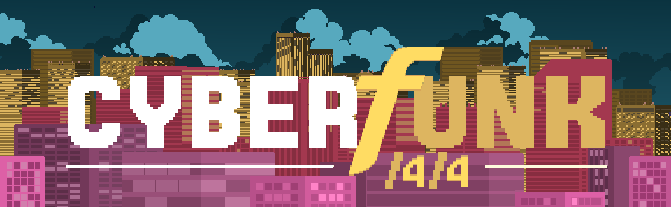
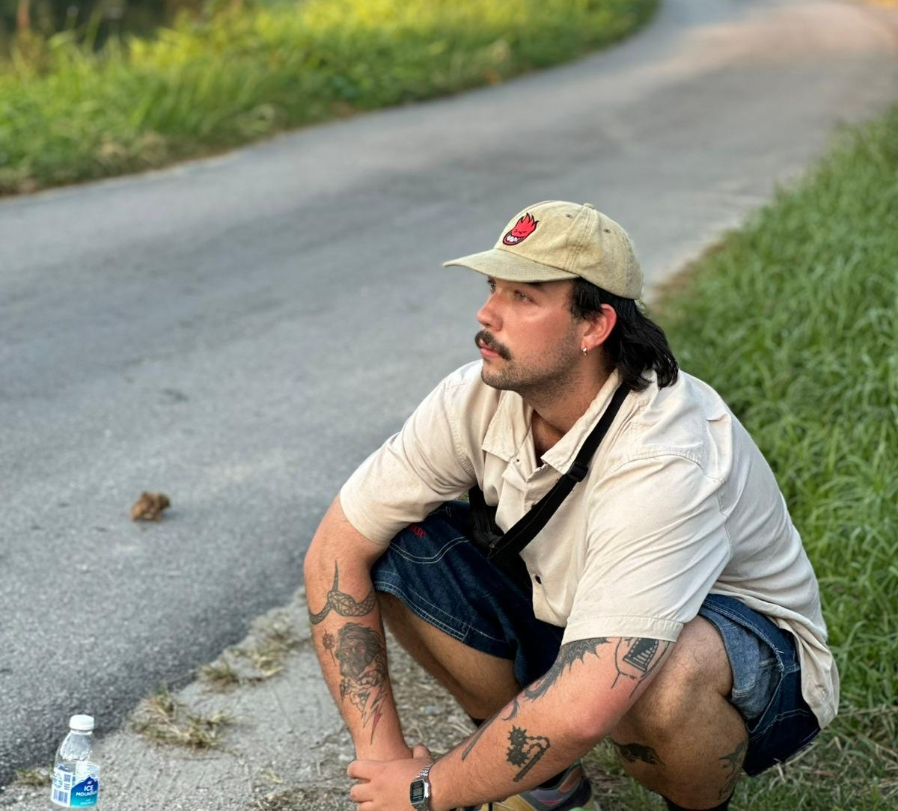

Rhythm based roguelike where defense is your only offense.
Winner of the 'Industry Ready' award presented by Riot Games at UTS
Games Showcase 2026. I am responsible for programming
procedurally generated maps, as well as back-end level control
systems.
About Me
Hi there, my name is Arie Maljers and I am a game programmer and designer. I have been responsible for systems programming on my flagship title 'Cyberfunk /4/4' and content programming on 'Terminal Horizon'. In addition to my project work, I achieved a WAM of 85 in my Bachelor of Game Development at the University of Technology Sydney, and have studied abroad at University Sains Malaysia. I make games to connect the dots between narrative themes and gameplay mechanics using unique programmatic solutions.
